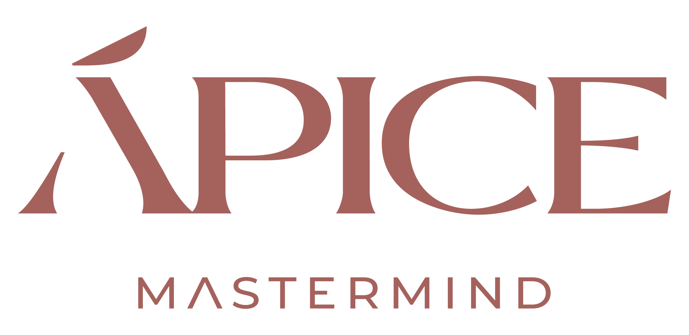
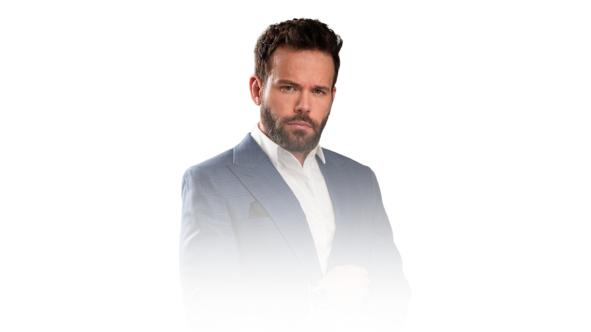
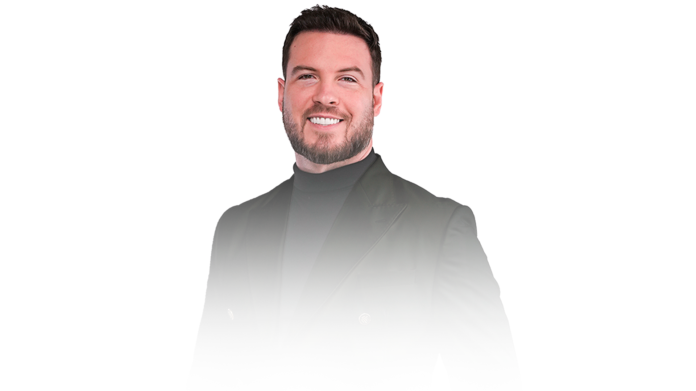
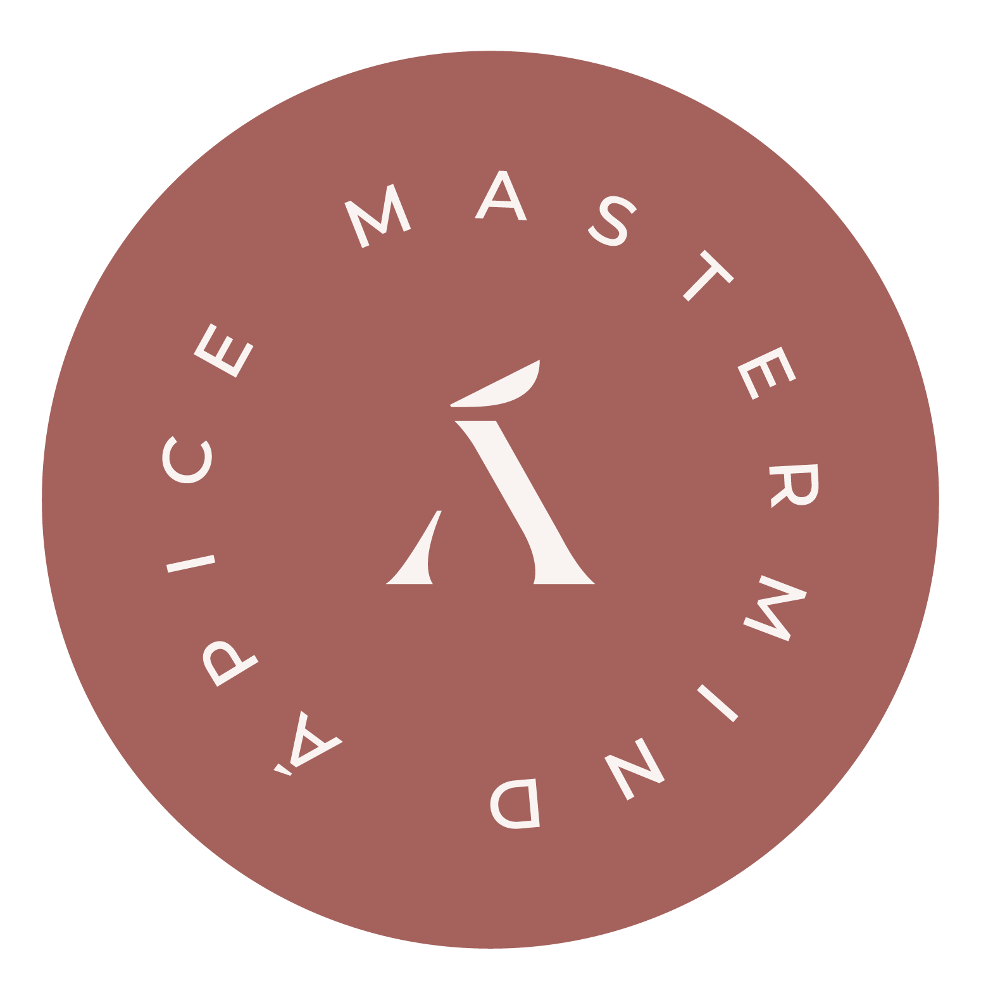

Nós direcionamos. A execução é da empresária.
Crescimento exige protagonismo, maturidade e responsabilidade.
O número não mente. A clareza vem antes do conforto.
Decisões fortes nascem de diagnósticos reais.
Não acreditamos em expansão desorganizada.
Escalar exige base sólida, consistência e sustentação.
Empreender é liderar.
A transformação do negócio começa pela transformação da empresária.
O sucesso empresarial não pode custar a destruição da vida pessoal.
Negócio, casamento, filhos e propósito caminham juntos.
Resultados extraordinários exigem disciplina, clareza e padrão elevado.
Não se constrói legado na mediocridade.
A proximidade certa acelera a expansão.
O ambiente molda decisões, mentalidade e resultado.
Não construímos apenas faturamento.
Construímos empresas que permanecem, famílias fortalecidas e histórias que atravessam gerações.
Direção estratégica, autoridade e grandes movimentos. Definem rota.
Inteligência relacional. Conecta pessoas, lê momento, sustenta o vínculo.
Especialistas que aprofundam, estruturam e operacionalizam cada pilar.
Acompanhamento contínuo, follow-up e execução. Garantem que a estratégia aconteça.



Onboarding, socioemocional, financeiro, negócio e curadoria — organizados como mapa vivo da empresária.
Indicadores, gargalos, prioridades, histórico de decisões e acionamentos.
Metas, responsáveis, checkpoints, prazos e revisões. Diagnóstico vira execução.
O sistema indica: anjo, guardião, pilar — ou base. Com timing certo.
Brunch com Maíra, sessões, mudanças de fase, novas decisões. Ouro vira patrimônio.
Executivos, evolução, curadoria, operação e board expandido.
Capital social estratégico: quem precisa de quem, quem está pronto para expansão, quem está em risco.
O Mastermind deixa de depender da memória das pessoas e passa a depender do sistema.